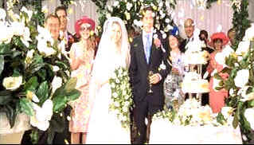

| Bridget
Jone's Diary (SE)/A,A |
| Miramax/2001/98/ANA 2.35 |
I absolutely loved this film! Feeling thoroughly uplifted as the end
credits rolled, I was reminded that few films succeed with such effective consistency. Here's
side-splitting comedy coupled with credible romance. Beautifully crafted from the sumptuous
cinematography to often funny costumes, first-time director Sharon Maguire shows a veteran's poise
in pacing, scene transition, and command of actors. Bravo Sharon!
 |
| A wedding--NOT! ©Miramax |
Bridget Jones is a thirty-something single working in the British publishing
industry. Her suburban family would like nothing more than for her to find a permanent beau. At the
annual Darcy Christmas bash, Mark Darcy is reintroduced to her, but sunny Bridget collides with an
iceberg. Romance is in the cards for Bridget at work with boss Daniel Cleaver. In the meantime, she
keeps bumping into Mark Darcy at inopportune moments. And Darcy and Cleaver have a questionable
history to boot.
Helen Fielding wrote the script from her own novel. When I saw Fielding's name,
Bridget's romp reminded me of modern day lady Tom Jones. Of course, there's The Pride and Prejudice
nod a la the Darcy family.
Not since Robert DeNiro beefed up for Raging Bull has a actor downed milk shakes
with such courageous abandon. Renee Zellweger reportedly added twenty pounds (not Sterling) to her
weight to fit the Bridget mold. Not that Zellweger sheds her appeal, but at least the weight jokes
work. Zellweger is a joy to watch. She catches the fragile security of Bridget, yet keeps her head
held high with a marvelous deprecatory sense of humor. The jokes pour on like a thick viscous
syrup over pancakes. Hugh Grant makes the most of his caddish cadences with a convincing
performance as Cleaver. Darcy's Firth is so straight you can't wait for him to bend just a bit.
There are winning supporting performances to enrich the Bridget Jones's Diary experience.
Gemma Jones does daffy deliciously as Bridget's mom and Jim Broadbent brings a touching note to Dad
Jones.
Bridget Jones's Diary is brought to a special edition DVD in a wonderful transfer. Every precious detail is captured with keen
sense of the production. Breezy, sharp images and outstanding background focus. The color is
upbeat, fully saturated and cleanly accurate. There's a nice variety of flesh tones. Boy, this DVD
has terrific punch. Blacks are endlessly deep. Night scenes are delivered with maximum gloss. The
Dolby Digital 5:1 surround is excellent. Dialogue is perfectly clear, though laughter may cover up
some of the clever script lines.
Sharon Maguire provides refreshing audio commentary with generous honesty. The
commentary is a good reflection of the brio that went into the production. There's a behind the
scenes featurette, deleted scenes, a couple of music videos, and Helen Fielding's original
newspaper columns that form the spine of Bridget Jones's Diary.
|
|
|
|

Selections from the feature archive include articles on
Akira Kurosawa, Frank
Darabont, Blonde Bimbos, Hollywood Street Gangs, or Vietnam: The
Hollywood Pariah, and many more....

Catch the Hollywood take on Blonde Bimbos by clicking on the
image above.

The
Movie Poster Archive includes extensive poster images from the films of stars like Susan Hayward,
Kirk Douglas, Katharine Hepburn and many more. Our featured star is Cary
Grant.

Charade/A,B

Successfully combining romantic comedy and suspense is no small achievement. Charade does it
with panache.


ISF Monitor Calibrations in the
Tristate New York area. Lots of hardware info and frequent hardware peaks from video expert Kevin
Miller.They may be judgmental, but that's the point, isn't it. Lots of DVD reviews plus news and
more.
 Have you visited Home Theater
Talk lately? One of the friendliest places on the Net for Home Theater and DVD discussion, you
can get help for installation problems or simply share your opinions with other Vidiots. Have you visited Home Theater
Talk lately? One of the friendliest places on the Net for Home Theater and DVD discussion, you
can get help for installation problems or simply share your opinions with other Vidiots.
MRQE
Find reams of movie and DVD reviews at the Movie Review Query Engine, a index of reviews appearing on the Internet.
|